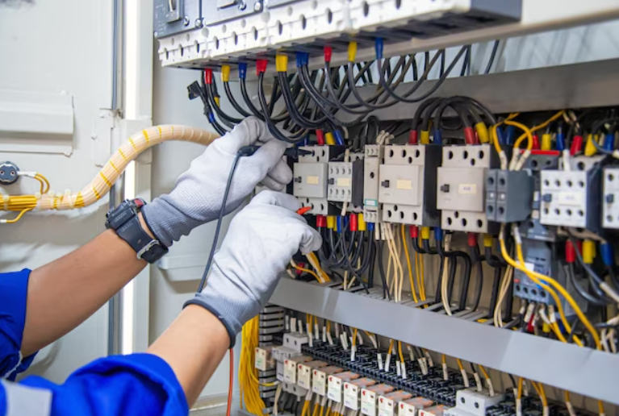

Plumbing Services
Offer repairs, installations, and maintenance for plumbing systems in residential, commercial, and industrial buildings.

Electrical Services
Provide electrical inspections, repairs, and installations for lighting, wiring, outlets, and other electrical components.
HVAC Services
Offer heating, ventilation, and air conditioning (HVAC) maintenance, repairs, and installations to ensure comfortable indoor environments.

General Maintenance
Include general building maintenance services such as painting, carpentry, flooring repairs, and other routine upkeep tasks.